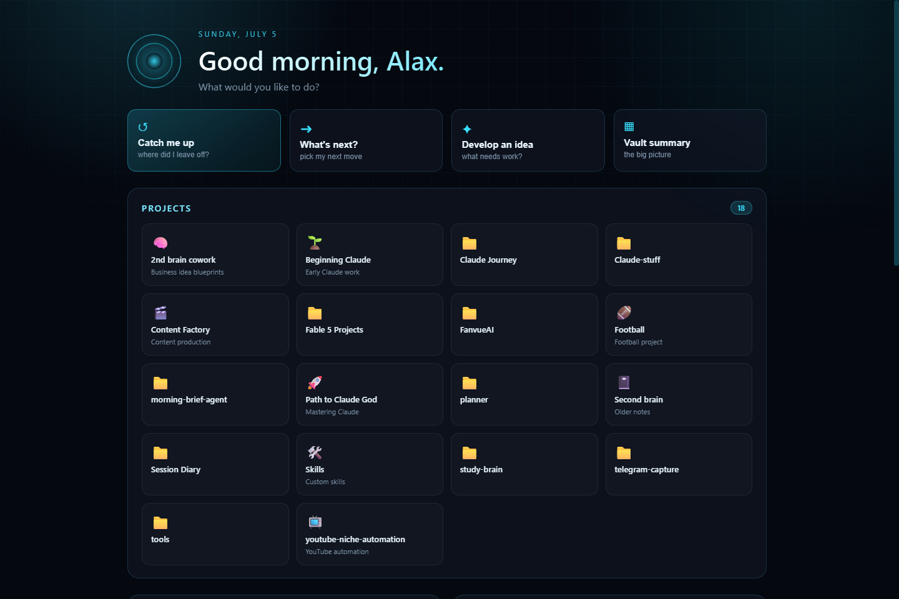

Brain Dashboard
A local Jarvis for every project on my machine.
Chat with Claude, drop into a real embedded terminal, switch project context, and watch the token cost of every AI call in real time.

A Node.js web app with no framework: a plain HTTP server, a WebSocket bridge, and vanilla JS on the front. The embedded terminal is a genuine Claude REPL running in the browser through ConPTY and xterm.js, not a mock. It is the home base I actually start my day in.
- Node.js, zero framework
- WebSocket + ConPTY
- xterm.js
- cost observability
- headless Claude orchestration
living system
What it actually took. The embedded terminal nearly broke me. Plain node-pty fails on Node 24 on Windows with a bare spawn EINVAL, and so does the usual prebuilt fork; finding that the Homebridge prebuilt was the one binding that works took a full evening of dead ends. The lesson that stuck: when a native module fails, the fix is rarely your code, it is picking the right build of someone else's.